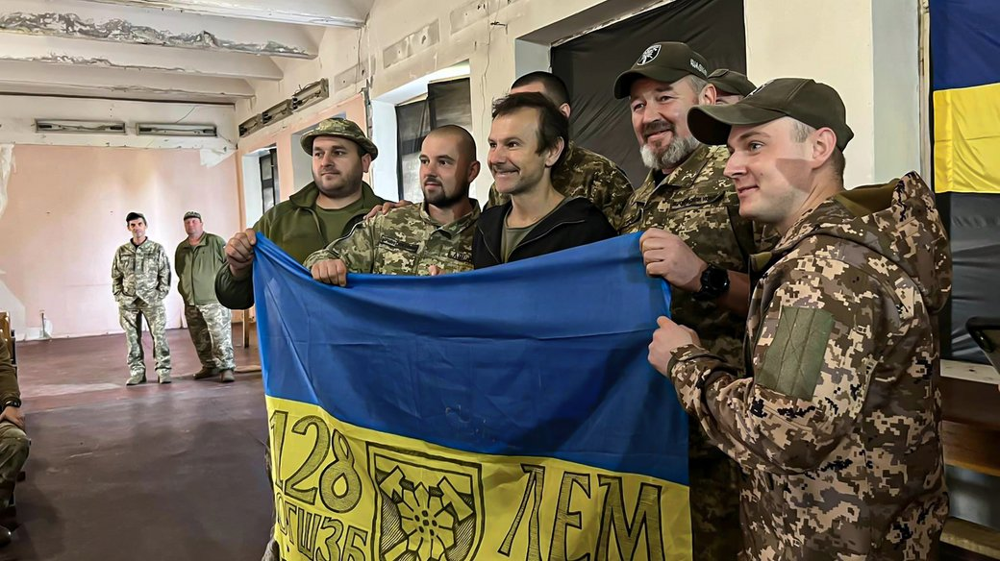
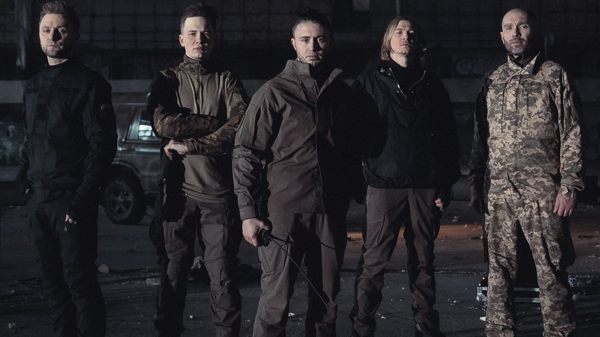

Українські артисти, які підтримують військових
Океан Ельзи
Український гурт «Океан Ельзи» активно підтримує ЗСУ благодійними концертами та виступами на фронті. На концертах до 30-річчя, понад 1,8 млн грн спільно з фондом «Відкриті очі», та майже 7,7 млн грн для ГУР МО зі львівських концертів, спрямовуючи кошти на швидкі та техніку для військових.
Ключові факти їхнього внеску у перемогу:
- Масштабні збори: Загальна сума допомоги, залучена гуртом та Святославом Вакарчуком, перевищила 355 млн грн. Ці кошти спрямовуються на критичні потреби: дрони, системи РЕБ, пікапи та тактичну медицину.
- Благодійні тури «Help for Ukraine»: Гурт проводить світові турне, значна частина прибутку від яких йде на гуманітарну допомогу та потреби ЗСУ. Наприклад, під час концертів у США та Європі збиралися кошти на автомобілі для розгвардійців та спецпідрозділів.
- Концерти-донати: Кожен великий виступ гурту, зокрема серія концертів «Той день» у Палаці Спорту, супроводжується великими благодійними аукціонами та зборами безпосередньо в залі.
- Допомога через творчість: Прибутки від прослуховувань нових альбомів (як-от «Lighthouse») та продажу мерчу регулярно перераховуються на реабілітацію поранених бійців. Зокрема, гурт тісно співпрацює з проєктами з протезування ветеранів.

Антитіла
Гурт «Антитіла» з початку повномасштабного вторгнення активно підтримує Збройні Сили України, поєднуючи творчість із волонтерською діяльністю та безпосередньою участю в обороні.
Ключові факти їхнього внеску у перемогу:
- Гурт «Антитіла» з перших днів повномасштабного вторгнення росії в Україну перетворився з музичного колективу на активних учасників спротиву. Їхній внесок у майбутню перемогу є комплексним і охоплює військову, волонтерську та інформаційну сфери.
- Безпосередня участь у бойових діях: Музиканти гурту вступили до лав 130-го батальйону територіальної оборони Києва, пройшли навчання та близько півроку виконували бойові завдання.
- Благодійний фонд «Антитіла»: Гурт заснував благодійний фонд, який займається матеріально-технічним забезпеченням Збройних Сил України.
- Символічна пісня «Фортеця Бахмут»: Пісня стала справжнім гімном українського спротиву, яка піднімала бойовий дух військових та цивільних. Кліп знято на реальних позиціях.

Jerry Heil
Jerry Heil (Яна Шемаєва) — одна з найяскравіших представниць сучасної української сцени, яка з початку великої війни стала потужним голосом України у світі, поєднуючи музичну кар'єру з масштабною волонтерською діяльністю.
Ключові факти її внеску у перемогу:
- Культурна дипломатія: Яна активно гастролює світом, розповідаючи іноземній спільноті про події в Україні. Її участь у «Євробаченні-2024» стала важливою платформою.
- Благодійні збори: Співачка регулярно проводить збори коштів на потреби ЗСУ через свої соцмережі та під час концертів. Вона допомагає закуповувати дрони, автівки та обладнання.
- Підняття бойового духу: Творчість Jerry Heil під час війни перетворилася на справжні гімни незламності.
- Популяризація українського фольклору: Вона майстерно інтегрує автентичні українські мотиви у сучасний поп-контекст.